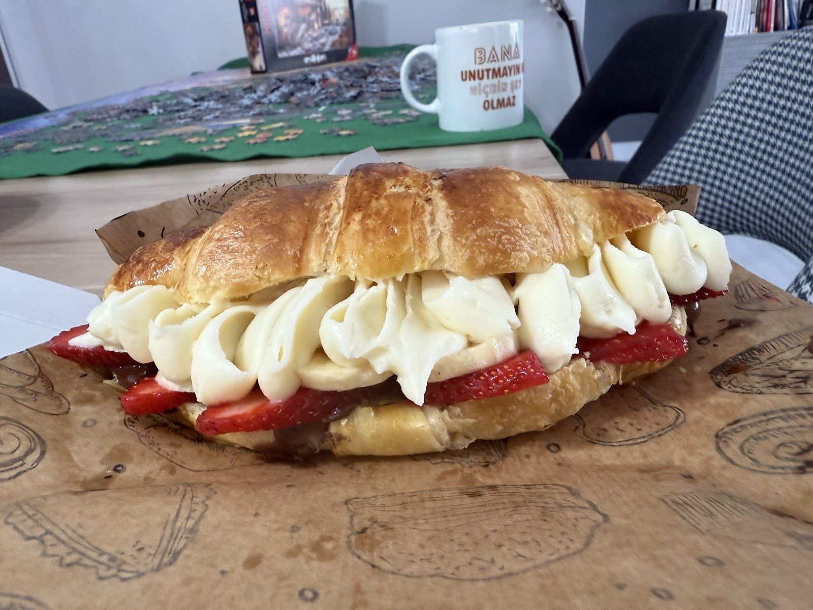

Donut
Çilekli, vanilyalı ya da Biscoff Lotuslu.
BEYLİKDÜZÜ · AKTEL RESIDENCE AVM
Kremalı bir kruvasan, küçük bir tatlı molası ya da kutlamanızın pastası. Sigun’a hoş geldiniz.

MENÜDEN BİRKAÇ TAT
Tek kişilik bir mola da olur, paylaşmalık bir kutu da. Güncel çeşitler için menüye göz atın.
BUTİK PASTA
Aklınızdaki tasarımı, kişi sayısını ve tarihi bizimle paylaşın. Pastanızın detaylarını birlikte konuşalım.
Instagram’dan bilgi alın ↗Hazırlık süresi, içerik ve fiyat siparişe göre netleştirilir.
GOOGLE YORUMLARI
İçeri girince tatlı tereyağı kokusu çok güzeldi. Çalışanlar çok nazikti. Waffle taze ve lezzetliydi. Beklerken çocuğumla kurabiyelere ve küçük süs eşyalarına baktık. Tekrar gelmek isterim.
YJ
Google yorumunu aç ↗Çok lezzetli. Malzemelerin hepsi çok taze. Tüm çalışanlar çok nazik ve güler yüzlü. Mahallemizin bir numaralı tatlıcı dükkânı!
JOHN PARK
Google yorumunu aç ↗YOLUNUZ DÜŞERSE
Her gün 09.30–22.00